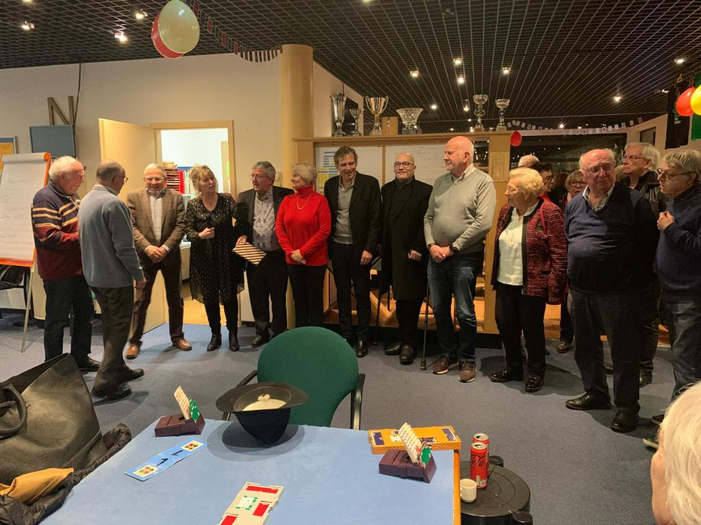
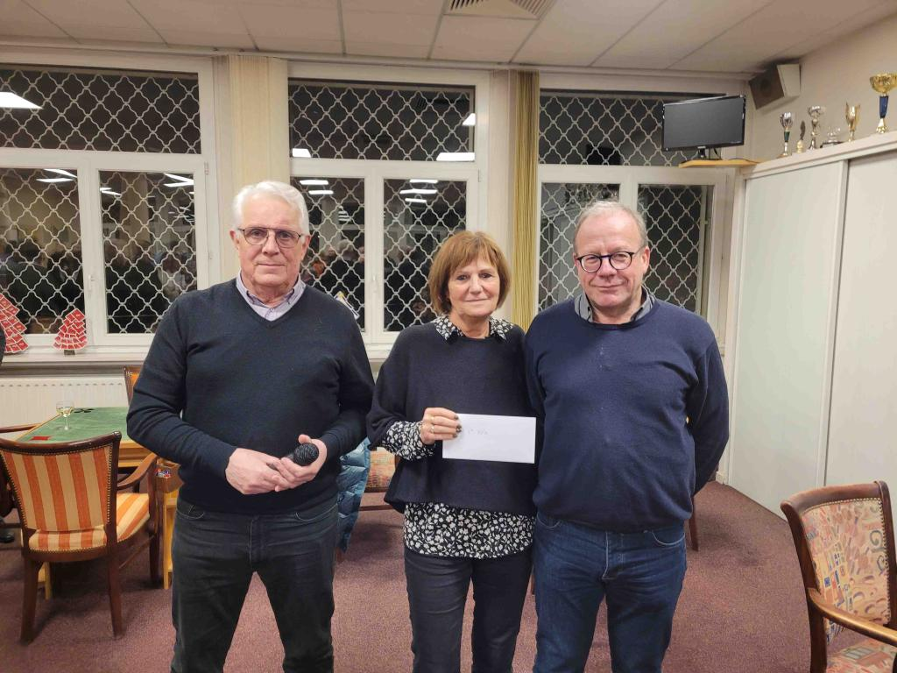

IMP Nancy Jarville 20 décembre 2024 : le règlement des Challenge Lorrains évolue
mercredi 15 janvier 2025, par Michael Chassagne
Le Club de Jarville organisait le vendredi 20 décembre le 3ème tournoi IMP de la saison.
L'affluence a été décevante. La date choisie par votre serviteur y est sans doute pour quelque chose.
Le buffet a permis de féliciter les vainqueurs de chaque ligne
A nouveau Mme et M Heim - M Chottin et M Langlais
Je vous invite à consulter les nouveaux classements des deux Challenges suite aux modifications décidées par le Conseil Régional. Les nouveaux règlements sont également disponibles.
Le bridge lorrain brille au plus haut niveau
mercredi 15 janvier 2025, par Yves Titeux
Philippe Chottin et son partenaire parisien ont récemment conquis le titre de champion de France en division nationale 1, tandis que François Michel Sargos et Philippe Koeppel faisaient de même en division nationale 2.
Mais ce n'est pas tout: Philippe Chottin, au sein de l'équipe de France senior, remporte aussi la médaille de bronze lors des World Bridge Games à Buenos Aires. Franck Riehm et l'équipe de France Open, pendant ce temps-là, se classent troisièmes de la Chanpion's Cup à Boarlo Terme en Italie!
Le Bridge Club de Nancy Jarville, qui est le port d'attache de ces champions, a naturellement fêté mardi 26 le retour triomphant des ses représentants. Quelques photos supplémentaires sont d'ailleurs visibles sur la page du club de Jarville.

IMP Thionville 22 novembre 2024
mercredi 15 janvier 2025, par Michael Chassagne
Vendredi 22 novembre 2024, le club de Thionville a accueilli la deuxième étape du Challenge IMP. Vingt-quatre paires se sont rencontrées dans la bonne humeur.
Les vainqueurs de chaque ligne : Mme Becker et M Chottin --- Mme et M Heim
Les participants ont pu se retrouver ensuite autour d'un excellent buffet.

Epinal 11 novembre 2024
mercredi 15 janvier 2025, par Michael Chassagne
Le Challenge Lorrain a fait étape à Epinal le 11 novembre 2024.
72 joueurs ont pu participer au tournoi sous la direction de Thomas Joannès.
L'excellent buffet a permis de conclure en beauté cette journée.
Félicitations à MM Banchereau et Langlais vainqueurs de cette édition.
Tournoi de Metz RG par paire 29 septembre 2024
lundi 30 septembre 2024, par Michaël Chassagne
Le troisième tournoi du Challenge a eu lieu le dimanche 29 septembre 2024.
Le tournoi de Metz Rollon Gadelle a fait le plein et a même du refuser du monde.
Il faut toujours penser à s'inscrire suffisamment tôt.
L'ambiance et le buffet ont été une grande réussite.
Bravo aux vainqueurs : Philippe Banchereau et Florent Langlais.
Le classement du Challenge à jour est disponible dans la rubrique document